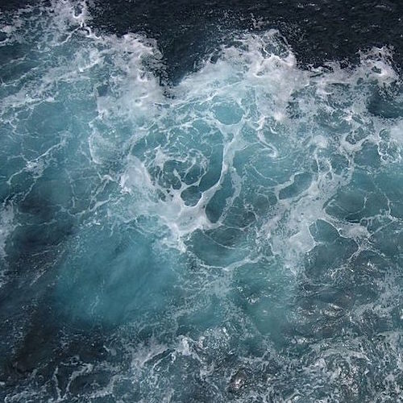

Софья Чернозуб
Что вы чувствуете, когда видите воду? Большие, наполненные водой бассейны. Пространственные водоемы. Бушующее море или океан. Как минимум, – это завораживает. Как максимум, – наполняет окружающие природные объекты жизнью, считая человека и всех животных. Первостепенная роль воды в жизни всех живых существ, и человека в том числе, связана с тем, что она является универсальным растворителем огромного количества химических веществ. То есть фактически является той средой, в которой и протекают все процессы жизнедеятельности. Три четверти поверхности земного шара покрыты водой. Водную оболочку земли называют гидросферой. Большую ее часть составляет соленая вода морей и океанов, а меньше - пресная вода озер, рек, ледников, грунтовые воды и водяной пар. В атмосфере нашей планеты вода находится в виде капель малого размера, в облаках и тумане, а также в виде пара. При конденсации выводится из атмосферы в виде атмосферных осадков.
Отношения, связанные с использованием "воды", регулируются гражданским законодательством, как и другие вещи, находящиеся в товарном обороте. Есть еще понятие «воды», которое имеет немного другие характеристики. Если "воды" - это вся вода, находящаяся в водных объектах, то есть в естественном природном состоянии на поверхности суши в формах ее рельефа либо в недрах, то "вода" - это изъятое из природной среды вещество, которое уже не находится в водном объекте. Оно может быть заключено в резервуарах, других емкостях, водопроводных трубах и просто в бытовой посуде для питья и использовано для повседневных нужд. Отношения же по поводу "вод", то есть воды, находящейся в окружающей природной среде и сосредоточенной в водных объектах, регулируются водным законодательством. Ограниченность водного пространства рамками водного объекта имеет важное значение для определения сферы действия водного законодательства. Так, если вода, хотя и находится в окружающей природной среде (например влага в атмосфере), но не сосредоточена в водных объектах, то отношения по поводу этой воды не являются предметом регулирования водного законодательства. То же можно сказать о поверхностном стоке воды (водосборной площади). Безусловно, сток воды находится непосредственно в окружающей природной среде, но пока он не сформировал водного объекта, его рассеянная в природе вода не образует предмета водного законодательства.